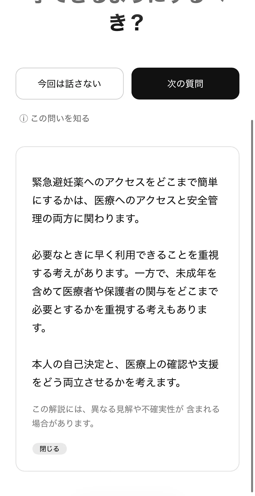
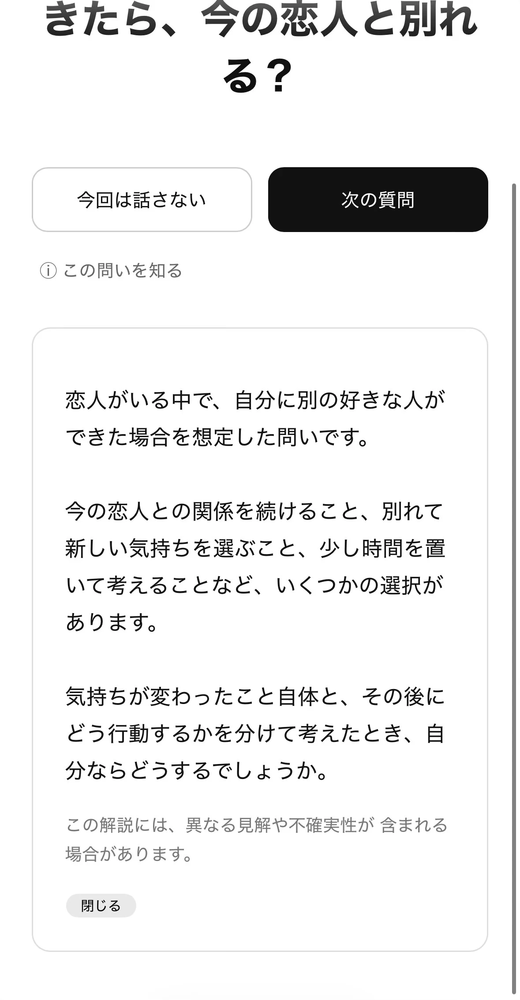

Level 4の前に確認する
Level 4には、家族・恋愛・人生観など、個人的な経験や強い価値観に触れる質問が含まれます。開始前に警告画面を表示し、戻るか続けるかを選べます。
Level 4を続けない選択は、体験の失敗ではありません。話したくないときに戻れることを、Omoiの操作に含めています。
質問中の利用者の選択
01
今回は話さない
答えたくない質問を飛ばし、次の質問へ進めます。
02
レベルを変える
質問画面からレベル選択へ戻り、話す深さを変更できます。
03
問いを知る
質問の背景や異なる見解を確認してから、考えることができます。
解説の扱い
質問データの一部には解説があり、質問の背景、論点、異なる考え方、不確実な点を示します。解説は答えを決めるためではなく、自分の考えを話すための補助情報です。


データとプライバシー
公式READMEでは、アカウント不要、回答の保存なし、回答の収集なし、広告なし、課金なしと説明されています。Omoiは、回答をサービスへ送信して評価するのではなく、質問をきっかけに目の前の相手と話すことを中心に設計されています。
コンテンツを改善する
質問文や解説に偏った表現、分かりにくい説明、不正確な情報を見つけた場合は、IssueやPull Requestで改善を提案できます。質問追加、出典追加、Levelやsensitivityの見直しも貢献の対象です。
Omoiは診断、医療、緊急対応、専門家による支援の代替ではありません。質問や解説だけで重要な判断を確定しないでください。